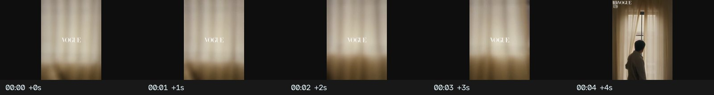
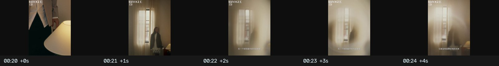
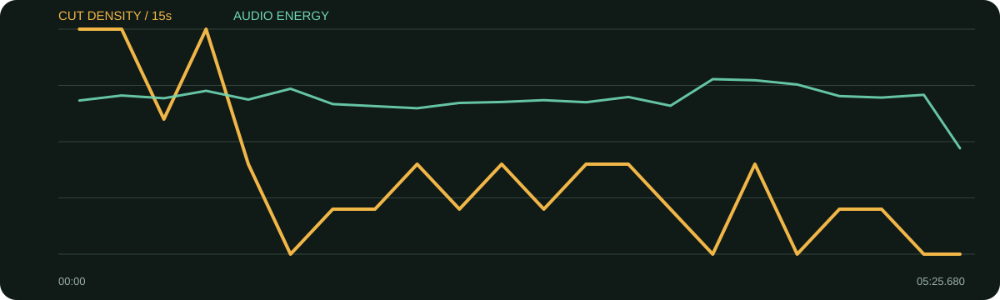

景别 / 机位系统
- 双人全景建立关系，单人中近景承担观点
- 眼睛/手/纸张等细节镜头把抽象讨论落到触感
- 暖色木质空间与窗光形成统一电影感
- 较长镜头与低切镜率匹配思辨内容
这条片先用窗帘、侧影、眼睛和纸张建立空间，再进入观点。它证明空镜不是“漂亮废镜头”，而是先告诉观众这场对话的温度、距离与思考速度。
口径说明：候选镜头由场景检测生成，闪光、人物快速动作、数字推拉和图形变化都可能误触发；逐秒重点由真实原片、字幕语义和全片总览人工选择。字幕来自本地中文语音识别，人名、品牌名与行业词可能有误，不把自动转写当逐字稿。
每张总览按时间顺序覆盖全片。它用于检查章节、B-roll密度和景别回环；详细切点以候选镜头表与下面的逐秒重点为准。
| 时间 | 章节 | 内容推进 | 剪辑任务 |
|---|---|---|---|
| 00:00–00:56 | 文艺片与计划 | 反思文艺片自限，并谈环境变化下的计划。 | 空镜冷开场后进入双人关系。 |
| 00:56–01:59 | 短剧为何抓人 | 电影院小众化、十秒留人、复仇爽感。 | 问题—回答—追问结构，单双人景别交替。 |
| 01:59–03:04 | 社群、咖喱与脸谱化 | 跨领域社群与短剧表演的极致化。 | 用物件/空间细节缓冲密集概念。 |
| 03:04–04:04 | 书籍与竖屏选择 | 推荐电影书，讨论手机竖屏。 | 话题较轻，镜头更松。 |
| 04:04–05:26 | 短剧经验与行业代价 | 短剧经验反哺长剧，同时揭示高强度工作与运气。 | 后段回到人物近景，结尾保留现实重量。 |
空镜贯穿：窗帘、人物侧影、眼部、纸张/桌面、空间全景。它们既建立质感，也覆盖提问压缩和话题换章。
综合音轨能量偏低且变化平缓，符合对谈留白；但未分离人声与配乐，不能把低能量段直接等同于音乐退场。
每张长图从左到右为真实的连续秒点。重点不是记住截图，而是看清一组画面怎样“进入—完成任务—退出”。

画面事实先给光线与材质，不急着见人。
怎么复现拍摄时先录10秒完全静止的环境，让剪辑有呼吸素材。
画面事实由空间进入人物，但仍不马上给正面全貌。
怎么复现按环境—局部—正面三步揭示人物。

画面事实在细节后回到空间全景，观众终于理解两人位置。
怎么复现双人对谈必须先有一条可用的关系镜头。
画面事实完整回答后让提问成为下一段节拍。
怎么复现保留提问者的视线或反应，不要全剪掉。
画面事实密集概念后转触觉画面，降低认知负担。
怎么复现每个抽象章节准备一个可触摸的视觉对象。
画面事实语义变重，镜头延长并减少装饰。
怎么复现当内容进入代价/风险时，主动降低剪辑表演感。

| 观察项 | 15秒窗口 |
|---|---|
| 视觉最密 | 00:00–00:15（20.0 候选切镜/分）；00:15–00:30（20.0 候选切镜/分）；00:45–01:00（20.0 候选切镜/分） |
| 视觉最缓 | 01:15–01:30（0.0 候选切镜/分）；03:45–04:00（0.0 候选切镜/分）；04:15–04:30（0.0 候选切镜/分） |
| 综合音轨最强 | 03:45–04:00（-20.0 dBFS）；04:00–04:15（-20.2 dBFS）；04:15–04:30（-21.1 dBFS） |
“视觉最密/最缓”基于自动候选切镜；“综合音轨最强”包含人声、环境声、音乐和音效，不能单独当作配乐音量。平均综合音轨为 -23.89 dBFS，最高15秒窗口 -20.01 dBFS，最低15秒窗口 -33.81 dBFS。
| # | 入点 | 出点 | 时长 | 代表帧秒点 | 证据 |
|---|---|---|---|---|---|
| 1 | 00:00.000 | 00:03.040 | 3.04s | 0.750000s | 自动候选 |
| 2 | 00:03.040 | 00:04.280 | 1.24s | 3.598000s | 自动候选 |
| 3 | 00:04.280 | 00:05.960 | 1.68s | 5.030000s | 自动候选 |
| 4 | 00:05.960 | 00:08.920 | 2.96s | 6.710000s | 自动候选 |
| 5 | 00:08.920 | 00:13.240 | 4.32s | 9.670000s | 自动候选 |
| 6 | 00:13.240 | 00:15.640 | 2.40s | 13.990000s | 自动候选 |
| 7 | 00:15.640 | 00:17.400 | 1.76s | 16.390000s | 自动候选 |
| 8 | 00:17.400 | 00:20.200 | 2.80s | 18.150000s | 自动候选 |
| 9 | 00:20.200 | 00:24.400 | 4.20s | 20.950000s | 自动候选 |
| 10 | 00:24.400 | 00:26.720 | 2.32s | 25.150000s | 自动候选 |
| 11 | 00:26.720 | 00:28.920 | 2.20s | 27.470000s | 自动候选 |
| 12 | 00:28.920 | 00:36.760 | 7.84s | 29.670000s | 自动候选 |
| 13 | 00:36.760 | 00:39.760 | 3.00s | 37.510000s | 自动候选 |
| 14 | 00:39.760 | 00:41.880 | 2.12s | 40.510000s | 自动候选 |
| 15 | 00:41.880 | 00:44.040 | 2.16s | 42.630000s | 自动候选 |
| 16 | 00:44.040 | 00:46.600 | 2.56s | 44.790000s | 自动候选 |
| 17 | 00:46.600 | 00:49.000 | 2.40s | 47.350000s | 自动候选 |
| 18 | 00:49.000 | 00:51.080 | 2.08s | 49.750000s | 自动候选 |
| 19 | 00:51.080 | 00:53.200 | 2.12s | 51.830000s | 自动候选 |
| 20 | 00:53.200 | 00:55.040 | 1.84s | 53.950000s | 自动候选 |
| 21 | 00:55.040 | 00:59.000 | 3.96s | 55.790000s | 自动候选 |
| 22 | 00:59.000 | 01:05.560 | 6.56s | 59.750000s | 自动候选 |
| 23 | 01:05.560 | 01:07.840 | 2.28s | 66.310000s | 自动候选 |
| 24 | 01:07.840 | 01:14.600 | 6.76s | 68.590000s | 自动候选 |
| 25 | 01:14.600 | 01:24.240 | 9.64s | 75.350000s | 自动候选 |
| 26 | 01:24.240 | 01:31.400 | 7.16s | 84.990000s | 自动候选 |
| 27 | 01:31.400 | 01:44.440 | 13.04s | 92.150000s | 自动候选 |
| 28 | 01:44.440 | 01:47.760 | 3.32s | 105.190000s | 自动候选 |
| 29 | 01:47.760 | 01:53.640 | 5.88s | 108.510000s | 自动候选 |
| 30 | 01:53.640 | 02:01.120 | 7.48s | 114.390000s | 自动候选 |
| 31 | 02:01.120 | 02:04.640 | 3.52s | 121.870000s | 自动候选 |
| 32 | 02:04.640 | 02:08.840 | 4.20s | 125.390000s | 自动候选 |
| 33 | 02:08.840 | 02:16.520 | 7.68s | 129.590000s | 自动候选 |
| 34 | 02:16.520 | 02:20.160 | 3.64s | 137.270000s | 自动候选 |
| 35 | 02:20.160 | 02:30.520 | 10.36s | 140.910000s | 自动候选 |
| 36 | 02:30.520 | 02:33.720 | 3.20s | 151.270000s | 自动候选 |
| 37 | 02:33.720 | 02:41.720 | 8.00s | 154.470000s | 自动候选 |
| 38 | 02:41.720 | 02:47.960 | 6.24s | 162.470000s | 自动候选 |
| 39 | 02:47.960 | 02:51.960 | 4.00s | 168.710000s | 自动候选 |
| 40 | 02:51.960 | 03:01.640 | 9.68s | 172.710000s | 自动候选 |
| 41 | 03:01.640 | 03:08.680 | 7.04s | 182.390000s | 自动候选 |
| 42 | 03:08.680 | 03:14.040 | 5.36s | 189.430000s | 自动候选 |
| 43 | 03:14.040 | 03:18.160 | 4.12s | 194.790000s | 自动候选 |
| 44 | 03:18.160 | 03:25.520 | 7.36s | 198.910000s | 自动候选 |
| 45 | 03:25.520 | 03:28.360 | 2.84s | 206.270000s | 自动候选 |
| 46 | 03:28.360 | 03:31.920 | 3.56s | 209.110000s | 自动候选 |
| 47 | 03:31.920 | 03:41.320 | 9.40s | 212.670000s | 自动候选 |
| 48 | 03:41.320 | 03:56.720 | 15.40s | 222.070000s | 自动候选 |
| 49 | 03:56.720 | 04:02.640 | 5.92s | 237.470000s | 自动候选 |
| 50 | 04:02.640 | 04:08.680 | 6.04s | 243.390000s | 自动候选 |
| 51 | 04:08.680 | 04:13.560 | 4.88s | 249.430000s | 自动候选 |
| 52 | 04:13.560 | 04:20.600 | 7.04s | 254.310000s | 自动候选 |
| 53 | 04:20.600 | 04:31.320 | 10.72s | 261.350000s | 自动候选 |
| 54 | 04:31.320 | 04:39.840 | 8.52s | 272.070000s | 自动候选 |
| 55 | 04:39.840 | 04:50.920 | 11.08s | 280.590000s | 自动候选 |
| 56 | 04:50.920 | 04:58.440 | 7.52s | 291.670000s | 自动候选 |
| 57 | 04:58.440 | 05:08.400 | 9.96s | 299.190000s | 自动候选 |
| 58 | 05:08.400 | 05:21.800 | 13.40s | 309.150000s | 自动候选 |
| 59 | 05:21.800 | 05:25.680 | 3.88s | 322.550000s | 自动候选 |